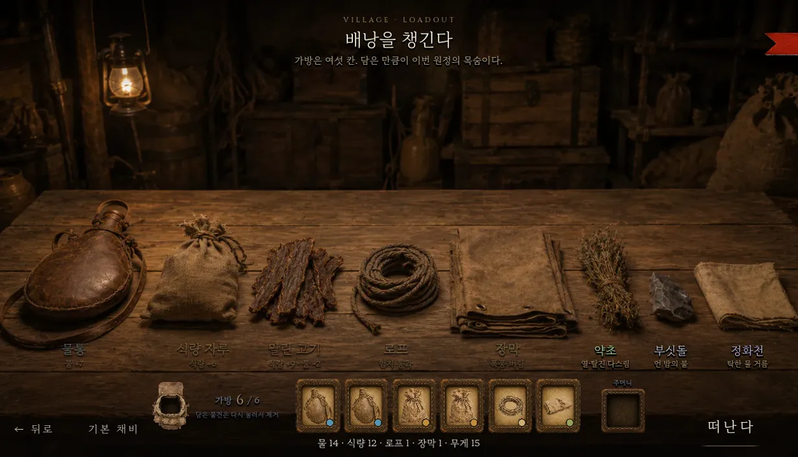
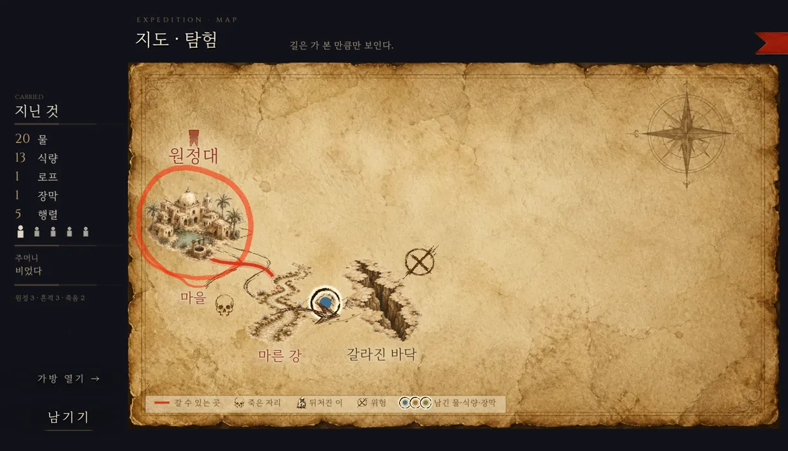
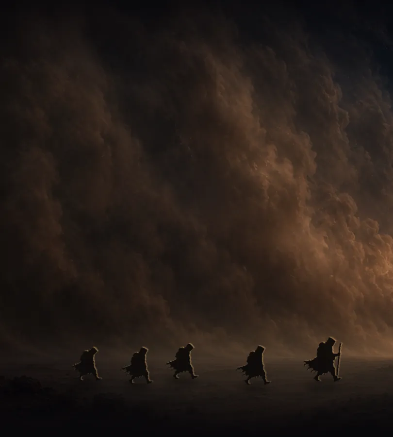

See you on
the other side
폭풍이 지나가고 모래가 가라앉으면,
재앙을 멈추러 원정대가 떠납니다.
모래폭풍은 글을 지웁니다. 말은 남지 않고, 물건만 남습니다.
설치 없이 브라우저에서 무료로 플레이할 수 있습니다.
원정은 이렇게 흘러갑니다
가방은 여섯 칸이고, 담은 만큼이 이번 원정의 목숨입니다.

물통과 식량, 로프와 장막. 무게가 12를 넘으면 걸음마다 물이 더 듭니다.

마른 강에서 폭풍의 문까지. 갈림길마다 걸음 수와 위험이 다릅니다.

한 걸음마다 물이 줄고, 위기는 예고 없이 옵니다. 대부분 돌아오지 못합니다.
위협은 세 가지입니다
위협마다 막아 주는 준비물이 하나씩 있습니다.
소모
갈증과 굶주림. 물통과 식량이 막습니다. "몸이 불덩이 같다" 같은 위기가 물을 앗아 갑니다.
차단
갈라진 틈과 벽. 로프가 막습니다. 한 번 건 로프는 다음 원정에도 다리로 남습니다.
폭풍
"느닷없이 모래바람이 몰아친다." 장막이 막습니다. 없으면 이를 악물고 버팁니다.
죽기 전 단 한 번, 물건 하나를 남길 수 있습니다
"물건 하나를 여기 둔다. 그만큼 잃지만, 계속 갈 수 있다."
"말은 남지 않는다. 물건만 남는다."
남긴 물건에는 두 단어까지 새길 수 있습니다. 다음 원정대는 그 자리에서 이런 카드를 만납니다. "이전 원정대가 남긴 물통. 아직 쓸 만하다. 곁에 새긴 말: '또 봐'"
마른 강까지 걸어 보는 미니 원정
개발 일지
'See you on the other side'라는 한 문장에서 시작해 itch.io에 베타 0.4를 올리기까지 남긴 기록입니다. 결말에서 드러나는 이야기는 이 일지에 적지 않았습니다.
-
2026년 6월 29일
한 문장에서 시작한 게임
기획서에 적은 이 게임의 출발점은 'See you on the other side'라는 문장 하나였고, 게임 전체를 끌고 갈 질문도 그 기획서에서 정했습니다.
"누군가 결국 닿을 것을 알 때, 미래의 나를 위해 지금의 나는 무엇을 포기하는가."
구조는 데스 스트랜딩에서 빌려 왔습니다. 플레이어는 저마다의 세계에서 혼자 나아가고, 앞서 간 사람과는 그들이 남긴 흔적으로만 만납니다. 제목은 Clair Obscur: Expedition 33처럼 부제 자리에 둘 생각이라, 앞에 올 세계의 이름은 아직 비워 두었습니다.
Godot 4.6 프로젝트는 이날 만들어 바로 GitHub Pages에 올렸습니다. 웹 배포 설정은 Eyes on You를 만들며 검증해 둔 것을 다시 썼고, 게임 규칙과 화면 코드를 나누는 구조는 Be the Bee에서 옮겨 왔습니다.
-
2026년 6월 29일
걷기만 해서는 고를 것이 없었다
첫 시제품은 옆에서 본 길을 한 걸음씩 걷는 횡스크롤이었습니다. 한 걸음에 물 하나, 두 걸음에 식량 하나가 줄고, 물이 바닥나면 원정대는 갈증으로 쓰러졌습니다.
그런데 앞으로 가는 버튼만 누르는 게임에는 고를 것이 하나도 없었습니다. 그래서 저는 This War of Mine처럼 상황을 읽고 대응을 정하는 방식을 넣기로 했습니다. 세 걸음마다 갈라진 틈이나 폭풍의 전조 같은 상황이 나타나고, 플레이어는 두 가지 대응 가운데 하나를 고릅니다.
같은 규칙으로 다섯 번 돌려 보니 선택에 따라 9걸음에서 14걸음까지 갈렸고, 한 번은 갈증이 아니라 굶주림으로 끝났습니다. 선택이 결과를 가르기 시작했습니다.
-
2026년 6월 30일
흔적을 남기는 사람은 내가 아니다
첫날 만든 상황 가운데에는 '과거의 내 물통'을 줍는 장면이 있었습니다. 이렇게 쓰면 플레이어가 죽을 때마다 예전의 자기 자신이 남긴 물건을 되찾는 이야기가 됩니다. 제가 생각한 이야기는 그게 아니어서 설정을 바로잡았습니다.
플레이어는 원정대를 거듭 떠나보내는 총괄자이고, 원정마다 대장 자리에 앉습니다. 하지만 실제로 길을 걷는 사람은 매번 다르고, 플레이어도 그 사실을 압니다. 흔적을 남기는 쪽은 이전 원정대이고, 그 흔적을 받는 쪽은 다음 원정대입니다. 제목 속의 '나'는 모든 원정을 기억하는 총괄자의 자리에만 남습니다.
-
2026년 6월 30일
앞선 선택이 나중에 돌아오게
참고작을 다시 정리하면서 이 게임에서 가장 중요한 축을 정했습니다. 제가 서울 2033과 Reigns를 참고작으로 든 가장 큰 이유는, 앞에서 한 선택이 나중에 다른 장면이 되어 돌아온다는 점이었습니다.
이날부터 선택 하나가 표시를 남기고, 그 표시가 같은 원정의 뒷부분이나 다음 원정의 사건을 바꾸도록 만들었습니다. 서울 2033에서는 글만으로도 밀도 있게 읽히는 이야기를, Reigns에서는 한 판이 쉽게 끝나지 않는 호흡을 가져왔습니다. 열 걸음 남짓이던 원정을 스물네다섯 걸음으로 늘리고, 마을 가까이는 넉넉하게, 멀어질수록 척박하게 길을 놓았습니다.
-
2026년 6월 30일
남기는 일과 죽는 일을 떼어 놓다
처음 만든 남기기는 원정을 스스로 끝낼 때만 쓸 수 있어서, 남기는 순간이 곧 죽는 순간이었습니다. 저는 물건 하나를 두고 가더라도 원정은 갈 수 있는 데까지 이어져야 한다고 보고 남기기를 죽음에서 떼어 냈습니다. 지금은 한 원정에 한 번, 물건 하나를 그 자리에 두고 그 몫을 잃은 채로 계속 걷습니다.
그러자 새 문제가 생겼습니다. 물건을 두고 더 걸으며 알게 된 것을 이미 두고 온 물건에 적을 길이 없었습니다. 고민 끝에 이 빈틈은 메우지 않기로 했습니다. 남긴 뒤에 배운 것을 전하지 못하는 것은 일찍 남긴 사람이 치르는 대가입니다. 게다가 목숨을 앗는 위험은 쓰러진 자리가 다음 원정대에게 저절로 알려 줍니다. 살아서 넘긴 위험의 교훈만은 살아남은 사람과 함께 잊히는데, 저는 그 편이 이 세계에 어울린다고 판단했습니다.
원정을 스스로 끝내는 선택도 이날 없앴습니다. 이제 모든 죽음은 목마름이나 굶주림, 위협에서 오고, 남기기를 미루다 갑자기 쓰러지면 아무것도 남기지 못합니다.
-
2026년 6월 30일 ~ 7월 1일
횡스크롤을 버리고 지도 위로
지도는 이날 하루에만 여러 번 다시 만들었습니다. 먼저 그린 지형도는 한 줄짜리 길을 구불구불 펼쳐 놓은 모양이었는데, 제가 원한 것은 Slay the Spire처럼 길이 갈라지는 지도였습니다. 갈라지는 지도로 다시 그리자 이번에는 갈 길이 한눈에 다 보였습니다.
제가 그리던 탐험은 데스 스트랜딩처럼 모르는 곳을 향해 걸으며 하나씩 알아 가는 것이었습니다. 가 보기 전에는 무엇이 있는지 모르게도 해 봤지만, 그것은 정보를 늦게 보여 주는 데 그쳤고 걷는 일은 여전히 지도와 떨어진 횡스크롤 화면에서 일어났습니다. 결국 이동 자체를 지도 위로 옮기고 횡스크롤 화면을 없앴습니다. 이제 지도에서 갈 곳을 누르면 원정대의 표시가 그 위를 걸어가며 물과 식량을 쓰고, 도착하면 그곳의 장면이 열립니다.
도착한 곳의 장면은 7월 1일에 만들었습니다. This War of Mine처럼 그 장소를 옆에서 자른 그림이 펼쳐지고, 그림 속 여러 곳 가운데 정해진 횟수만큼만 살필 수 있습니다. 그때는 장소마다 살필 곳이 두세 군데뿐이었고 대부분 물을 줍거나 빈손이었는데, 7월 7일에 네 곳에서 여섯 곳 사이로 늘리면서 새 자리에는 자원보다 고를 거리를 넣었습니다.
-
2026년 7월 1일
결말은 두 갈래
목적지에 닿았을 때의 결말을 정했습니다. 살아서 닿기만 하면 보게 되는 서늘한 결말이 기본이고, 여러 원정에 걸쳐 조건을 채워야 열리는 따뜻한 결말이 따로 있습니다. 이 게임의 승리는 한 번의 완벽한 원정이 아니라 여러 원정이 쌓아 온 흔적에서 나옵니다.
결말의 뼈대는 Claude가 내놓은 것을 받아, 원정마다 걷는 사람이 다르다는 이 게임의 설정에 맞게 고쳐 정했습니다. 원정대가 무엇을 멈추러 떠나는지는 플레이하는 동안 끝까지 설명하지 않고 결말에서만 드러나게 했습니다.
-
2026년 7월 1일 ~ 2일
아무도 목적지에 닿지 못했다
밸런스를 어떻게 확인할지 고민하다가, 원정을 자동으로 굴려 보는 시뮬레이터를 만들었습니다. 게임 규칙을 화면 코드와 나눠 둔 덕분에 화면 없이도 원정 하나를 처음부터 끝까지 돌릴 수 있었습니다. 시뮬레이터는 세 가지 방식으로 원정을 500판씩 걸어 보고, 어디서 무엇 때문에 쓰러지는지를 셉니다. 재미와 긴장은 기계가 잴 수 없어서 그쪽은 제가 폰으로 직접 해 보며 판단합니다.
첫 결과에서는 목적지에 닿는 원정이 한 판도 없었습니다. 길을 줄이면 쉽게 풀리는 문제였지만, 저는 먼 길을 간다는 느낌을 지키고 싶어서 거리는 그대로 두고 먼 곳의 보급을 늘렸습니다. 그렇게 고치자 살아남는 쪽만 골라 걷는 방식이 열 판에 한 판쯤 목적지에 닿게 됐습니다.
-
2026년 7월 2일
물통은 그냥 물 일곱이었다
가방에 담는 물건이 자원 계산에 그친다는 문제가 있었습니다. 물통은 물 일곱이고 식량 자루는 식량 여섯이라, 무엇을 담을지가 뻔했습니다.
그래서 원정마다 대장의 특기를 하나 고르는 직능을 만들고, 60 Seconds!처럼 특정 위기에서만 쓸모가 드러나는 도구도 넣었습니다. 약초는 열병에, 부싯돌은 언 밤에 쓰는 식입니다. 도구가 물이나 식량과 같은 칸을 두고 다투면 늘 밀려나서, 가방 밖에 주머니 한 칸을 따로 두었습니다.
짐이 무거우면 걸음마다 물이 더 드는 무게 규칙도 이날 넣었습니다. 7월 17일에는 반대로 가볍게 떠나면 물이 덜 들게 했는데, 마을 장터의 늙은 장사꾼이 첫 원정 때 건네는 말인 "어깨가 가벼워야 오래 걷는 법이지"에 맞춘 규칙입니다.
-
2026년 7월 2일 ~ 5일
코드로 그린 그림을 걷어 내다
그때까지는 사람 얼굴부터 지도까지 모든 그림을 코드로 그렸습니다. 하지만 장사꾼의 초상은 사람처럼 보이지 않았고, 지도는 양피지 위에 그은 직선뿐이었습니다. 저는 코드로 계속 덧칠하는 대신 그림을 밖에서 만들어 오기로 했습니다.
Claude Code가 그림마다 프롬프트를 정리해 두면, 제가 ChatGPT로 그림을 뽑아 왔습니다. 받은 그림의 파일 이름을 정리하고 배경을 지워 게임에 넣는 일은 다시 Claude Code가 맡았습니다. 배경음악 네 곡은 제가 Suno로 만들었고, 효과음은 ElevenLabs로 만든 소리와 freesound.org의 소리를 함께 씁니다.
-
2026년 7월 6일
폰에서만 들리던 타닥 소리
폰으로 웹 버전을 하면 배경음악에 타닥거리는 잡음이 섞였습니다. 저는 먼저 음악 파일을 의심했습니다. 파일에 섞여 있던 표지 그림을 빼고 곡 속의 타악기 소리도 누그러뜨려 봤지만, 잡음은 그대로였습니다.
방향을 바꾼 계기는 제가 Suno에서 받은 원본을 다시 들어 본 일이었습니다. 원본이 깨끗했으니 문제는 파일이 아니라 웹에서 소리를 재생하는 과정에 있었습니다. 소리를 따로 처리하는 스레드를 켜 보자 GitHub Pages에서는 게임이 아예 열리지 않아서 바로 되돌렸고, 배경음악만 브라우저가 직접 재생하도록 우회했습니다.
마지막으로 PC 브라우저와 폰을 견주어 보니, PC에서는 완전히 깨끗하고 폰에서만 가끔 잡음이 났습니다. 폰의 처리 성능이 원인이었습니다. 웹 버전은 지금 상태로 두고, 근본적인 해결은 앱으로 낼 때 하기로 했습니다.
-
2026년 7월 7일
남긴 말을 지도에서 읽는다
이 게임만의 재미가 어디에 있는지 다시 따져 봤습니다. 물과 식량이 곧 목숨인 규칙은 다른 생존 게임에도 있습니다. 이 게임에만 있는 것은 앞선 원정대가 물건에 새겨 둔 말인데, 그때까지는 그 말을 제대로 읽을 자리가 없었습니다.
그래서 갈 길을 정하기 전에 지도에서 그 말을 읽을 수 있게 했습니다. 바로 다음에 갈 수 있는 곳에 흔적이 있으면, 아직 가 보지 않은 곳이라도 표시를 눌러 새겨진 말을 볼 수 있습니다. 기획서에는 새긴 말이 거짓일 수도 있는 장치가 있었지만, 저는 이것을 빼고 흔적을 늘 정직하게 두기로 했습니다. 혼자 하는 게임에서는 흔적을 남긴 원정대도 모두 같은 플레이어가 보낸 사람들이라, 서로 속일 까닭이 없기 때문입니다.
새 세계를 시작하면 이전 원정대가 남긴 흔적 다섯 개가 미리 놓여 있게 했습니다. 그중 지도의 '갈라진 바닥'에 걸린 로프 덕분에 첫 원정부터 그 틈을 그냥 건널 수 있습니다. 시뮬레이터에서는 이 로프 하나로 목적지 도달률이 8%에서 13.6%로 올라 게임이 그만큼 쉬워졌지만, 저는 남긴 물건이 다음 원정에도 오래 쓸모 있다는 것을 첫 판부터 보여 주는 쪽을 택했습니다. 데스 스트랜딩에서 누군가 두고 간 사다리를 만나는 순간과 같은 자리입니다.
다른 플레이어와 흔적을 실제로 주고받는 방식은 7월 18일에 설계만 문서로 남기고 뒤로 미뤘습니다.
-
2026년 7월 9일
원정은 해마다가 아니라 폭풍마다
원래 설정에서는 원정대가 해마다 떠났습니다. 그런데 해마다 원정대를 보내는 구조는 Clair Obscur: Expedition 33과 너무 닮아 있었고, 원정과 원정 사이에 시간이 흐른다는 느낌도 없었습니다.
저는 원정이 달력이 아니라 폭풍을 따라 떠나도록 게임 속 글과 설계 문서를 모두 고쳤습니다. 모래폭풍이 세계를 쓸고 지나가 잠잠해지면 그 틈에 원정대가 떠나고, 폭풍이 오는 간격은 일정하지 않습니다. 한 원정이 끝나면 폭풍이 지나가고 모래가 가라앉은 뒤 다음 원정대의 이름이 불리는 막간 화면도 새로 만들었고, 7월 12일에는 이 막간을 삽화 세 장으로 다시 꾸몄습니다.
-
2026년 7월 9일
은신막 대신 장막
폭풍을 막는 준비물은 처음에 '은신막'이라고 불렀습니다. 그런데 숨는다는 느낌이 강해 폭풍을 막는 물건으로 읽히지 않았고, 영어 shelter를 그대로 옮긴 티도 났습니다. 바람막이와 방풍막, 천막과 텐트를 견주어 본 끝에 천막의 옛말인 '장막'으로 정했습니다. 텐트처럼 바로 떠오르면서도 이 세계의 예스러운 말투에 어울리고, 풍경을 묘사할 때 쓰는 '천막'과도 겹치지 않습니다.
같은 날 장사꾼의 대사도 다시 썼습니다. 규칙서를 읽어 주는 듯한 말투와 '릴레이' 같은 세계 밖의 낱말을 걷어 내고, 늙은 장사꾼이 실제로 할 법한 입말로 바꿨습니다. 7월 13일에는 넘어지는 것은 '쓰러지다', 사그라지는 것은 '스러지다'로 구분해 쓰기로 정했습니다.
-
2026년 7월 9일 ~ 10일
물건 대신 사람을 세는 결말
따뜻한 결말을 여는 조건은 처음에는 길에 남긴 물건의 개수였습니다. 그런데 저는 두 결말이 무엇으로 갈리는지가 분명하지 않다고 느꼈습니다. 살아서 목적지에 닿는 것은 두 결말에 똑같이 필요했기 때문입니다.
7월 9일에는 죽은 자리에 표식을 남겨 기리는 일을 조건에 넣었습니다. 그때까지 쓰임이 없던 죽은 자리가 비로소 의미를 얻었습니다. 다음 날에는 원정대를 대장과 대원 넷이 걷는 행렬로 그리고, 위험한 순간마다 대원이 스러지게 했습니다. 아무도 잃지 않고 닿는 것도 조건이 됐습니다.
마지막으로 물건의 개수를 조건에서 빼고, 길에 뒤처진 사람을 거두는 일을 넣었습니다. 제가 낸 아이디어는 "낙오된 과거의 원정대를 모으고, 나머지 희생자를 추모"하자는 것이었습니다. 이렇게 해서 따뜻한 결말의 조건은 모두 사람에 관한 일이 됐고, 지난 원정에서 잃은 대원이 다음 원정에서 거둘 사람이 되기도 합니다.
-
2026년 7월 11일
실패가 마을에 사람을 부른다
직능을 원정마다 고르던 방식을 바꿨습니다. 첫 원정은 언제나 평범한 대장이 이끌고, 원정에서 겪은 일이 마을에 새 사람을 부릅니다. 멀리 간 원정이나 짐을 무겁게 진 원정이 저마다 다른 사람을 데려오고, 갈증이나 주림으로 쓰러진 원정도 누군가를 마을로 이끕니다.
이렇게 하면 실패한 원정도 다음 원정의 밑천이 됩니다. 갈증으로 쓰러진 원정이 쌓이면 물길을 읽는 노인이 마을에 오는데, 그때쯤 플레이어는 그가 왜 필요한지 이미 겪어서 압니다.
"어느 바닥에 물이 숨었는지 늙은이는 냄새로 아네." 물지기가 마을에 오며 하는 말입니다.
-
2026년 7월 12일
선택지에도 대가의 문법이 있다
선택지의 결과는 고르기 전까지 숫자로 보이지 않습니다. 대신 글만 읽어도 결과의 방향과 크기를 어림할 수 있어야 한다고 정하고, 모든 사건의 글을 이 기준에 맞춰 다시 썼습니다. 더위를 무릅쓰고 강행하면 물이 줄고, 돌아가거나 기다리면 식량이 줄어듭니다. 크게 잃는 선택이라면 글에 '크게 축난다'고 미리 적었습니다.
사건이 카드 한 장으로 끝나지 않고 다음 장면을 부르게도 바꿨습니다. 지름길을 고르면 모래 둔덕이 길을 삼킨 장면이 이어지고, 거기서 다시 넘어갈지 돌아갈지를 고르는 식입니다. 무언가를 발견했을 때 줍거나 줍지 않거나를 고르게 하던 선택지는 없앴습니다. 줍지 않을 이유가 없는 선택은 가짜이기 때문입니다. 이제 발견한 것은 장면이 그대로 건네주고, 선택은 방식이나 감정이 갈리는 자리와 정말 어려운 갈림길에만 씁니다.
-
2026년 7월 18일
총괄자의 기억
지난 원정이 살펴서 빈손이었던 자리를, 다음 원정이 그곳에 다시 와서 또 살피는 일이 생겼습니다. 살필 기회가 정해져 있으니 같은 헛걸음을 두 번 하는 셈이었습니다.
플레이어에게 메모장을 주는 방법도 있었지만, 그건 기억하는 수고를 플레이어에게 떠넘기는 일이라 택하지 않았습니다. 대신 모든 원정을 기억하는 총괄자의 자리를 살려, 지난 원정이 살핀 자리 밑에 그때의 기억을 흐린 글씨 한 줄로 띄웠습니다. 빈손이었던 자리는 다시 살필 수 없게 막아 기회를 아끼게 했고, 물이나 사건이 있던 자리는 다시 살필 수 있습니다.
-
2026년 7월 18일
오프닝에는 세계만 남겼다
처음 한 번만 나오는 오프닝을 다시 썼습니다. 그전 오프닝에는 '죽기 전 단 한 번' 같은 규칙 설명이 섞여 있었는데, 규칙은 장사꾼과 튜토리얼이 이미 가르쳐 줍니다. 저는 튜토리얼과 겹치지 않으면서 오프닝만 보고도 이 세계에 빠져들 수 있기를 바랐습니다. 그래서 그림 다섯 장에 세계와 정서만 남기고, 마지막 장이 제목으로 이어지게 했습니다.
"죽음을 앞둔 이들은 다음 원정대를 위해 물건 하나를 남깁니다. 건너편에서 다시 만나자는 약속입니다."
같은 날 타이틀 로고도 넣었습니다. 세계의 이름은 정하지 않은 채로, 'See you on the other side' 한 문장만으로 로고를 만들었습니다.
-
2026년 7월 26일
영어판을 먼저 만들고 공개하다
itch.io에 공개하기 전에 영어판부터 만들기로 했습니다. 제가 문장마다 검수하지 않아도 될 만큼 자연스러운 영어를 목표로 삼았습니다. 게임 속 글은 한국어 원문을 손대지 않고 화면에 보이는 순간에만 영어로 바꾸기 때문에, 언어를 바꿔도 저장된 세계가 그대로 이어집니다.
Claude Code가 게임에서 문자열 1011개를 뽑아 번역했고, 물건에 새기는 단어 27개는 두 단어를 함께 새겨도 뜻이 통하도록 따로 골랐습니다. 영어 화면을 두 바퀴 돌아보며 겹치거나 잘린 글을 고친 뒤, 그날 밤 itch.io에 게임을 공개했습니다.
-
2026년 7월 26일 ~ 28일
열네 번 만에 잡은 먹통
공개하자마자 문제가 생겼습니다. 폰에서 itch.io로 게임을 하다가 다른 화면에 다녀오면, 게임 속 원정 일지가 터치에 전혀 반응하지 않았습니다. PC에서 같은 상황을 만들어 보면 모든 검사를 통과했습니다.
고친 판을 올리고 제가 폰에서 확인하는 일을 열네 번 되풀이했습니다. 세 번 연속으로 가설이 빗나간 뒤에는 추측으로 고치기를 멈추고, 의심 가는 값을 화면에 직접 띄우는 계측판을 만들었습니다. 그 화면을 찍은 두 장에서 원인이 드러났습니다. 일지의 탭 네 개가 화면 왼쪽 위 구석으로 밀려나 모든 터치를 가로채고 있었습니다.
탭이 왜 그 자리로 밀려나는지는 끝내 밝히지 못했지만, 일지를 그릴 때마다 탭을 제자리로 되돌리도록 고친 판에서 먹통이 풀렸습니다. 이어서 이름 칸을 누르면 가상 키보드가 뜨자마자 닫히던 문제까지 고친 뒤, 7월 28일 베타 0.4로 이 일을 마무리했습니다.
2026년 6월 29일에 시작해 7월 28일 베타 0.4를 낼 때까지 커밋이 535개 쌓였습니다.
만든 사람: soomin007. 함께 쓴 도구: Claude Code(코드), ChatGPT(그림), Suno(음악), ElevenLabs와 freesound.org(효과음)
물이 얼마 남지 않았습니다. 건너편에서 봅시다.